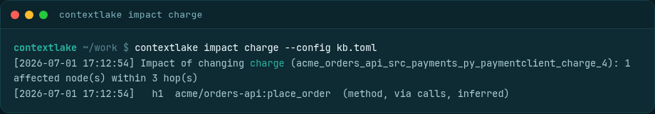
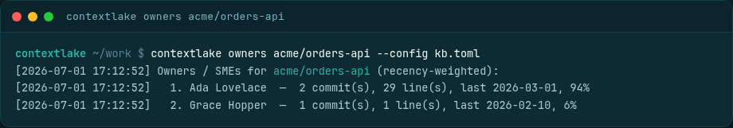

Asking the graph
Search the graph from the terminal, trace what a change would break, and find who to ask: `kb query`, `kb impact`, and `kb owners`.

Three commands answer the questions the graph exists for: kb query finds a symbol, kb impact
finds what breaks if you change it, and kb owners finds who to ask about it. All three print a
citation you can open, all three take --json, and none of them needs an editor or an MCP client.
The same three answers reach an agent over MCP as search_code / semantic_search /
hybrid_search, blast_radius, and who_knows; see
Serve it to your editor. This page is the terminal-side equivalent.
flowchart LR
G[("the graph")] --> Q["kb query"]
G --> I["kb impact"]
H[("git history")] --> O["kb owners"]
Q --> QA(["where is it?"])
I --> IA(["what breaks if I change it?"])
O --> OA(["who do I ask about it?"])
The split on the left is the one worth noticing: query and impact read the store, owners reads
git history, which is why it answers in a directory that was never indexed. Give it a repo id rather
than a path and it does open the store, only to find the clone.
Prerequisites#
- A store with an indexed repo in it: Index the code graph, or
contextlake bootstrap.kb ownersis the exception, it reads git directly and needs neither. - For
--retriever semanticorhybrid, acontextlake kb embedrun as well: Semantic search.
Important
Query an empty store and you get No matches, exit 0, which looks exactly like a genuine miss.
Opening the store creates it if it is absent (SqliteStore.__init__ in
src/contextlake/kb/store/sqlite_store.py runs mkdir(parents=True, exist_ok=True) and applies a
CREATE TABLE IF NOT EXISTS schema), so nothing tells you the index was never built. Run
contextlake doctor if the counts look wrong; it reports the store's real node and edge totals.
Find something: kb query#
contextlake kb query "CatalogService"
contextlake kb query charge --kind function --repo acme/billing-service
contextlake kb query "how do we charge a card" --retriever semantic
contextlake kb query charge --repo acme/billing-service --as-of a1b2c3
Each hit prints as repo · file:line · kind · name, so every result is a place you can open.
| Flag | What it does | Default |
|---|---|---|
--kind KIND |
Only nodes of this kind (function, class, table, …) |
all kinds |
--repo REPO |
Only this repository | all repos |
--limit N |
Most results to print | 20 |
--retriever fts\|semantic\|hybrid |
Which retrieval mode to use | fts |
--as-of COMMIT |
Search a repo's snapshot at a previously-indexed commit (needs --repo) |
latest |
--json |
A JSON array on stdout; every log line moves to stderr | off |
The three retrieval modes, and which to reach for#
| Mode | How it matches | Good for | Bad at |
|---|---|---|---|
fts (default) |
SQLite FTS5 over node name, qualified name and file, as prefix terms | a name you know, or its first few characters | a description of what the code does |
semantic |
nearest neighbours in embedding space | "how do we charge a card", where you have the idea and not the name | an exact rare identifier |
hybrid |
semantic seeds, then a Personalized PageRank rerank over the graph | most real questions | nothing in particular, it is the slowest of the three |
fts is prefix search, not substring search. Each word you type becomes a quoted prefix term,
so Catalog finds CatalogService and Service does not
(_fts_query in src/contextlake/kb/store/sqlite_store.py). Multiple words are an implicit AND of
prefix terms. That is the single most common reason a query that "should" match comes back empty.
Semantic and hybrid degrade to fts rather than failing, and say so on stderr, when there is no
embedder configured or the vector store cannot be opened
(src/contextlake/kb/cmds/query.py, the _semantic_results fallbacks). One gap is worth knowing:
if the vector store opens but is empty, the retriever returns no results rather than being
unavailable, so there is no fallback and no warning. An unexpectedly empty
--retriever semantic run usually means contextlake kb embed has not run yet.
--kind is applied differently per mode. On fts it is part of the SQL, so --limit 20 gives
you up to 20 matching nodes. On semantic and hybrid it is a filter applied after the retriever
has already cut to --limit, so --retriever semantic --kind function --limit 20 can return far
fewer than 20 functions even when the repo has hundreds.
--as-of is a different search, not the same search over old data. It reads the repo's stored
shard for that commit and matches with a case-insensitive substring test, so it neither uses FTS nor
honours --retriever. It needs --repo, because history is kept per repository.
Verification#
contextlake kb query CatalogService --limit 3
You should get up to three lines shaped like
acme/catalog-api · src/catalog/service.py:41 · class · CatalogService. If you get
No matches for 'CatalogService', check the index is populated with contextlake doctor before
suspecting the query.
See what breaks: kb impact#
contextlake kb impact charge
contextlake kb impact charge --repo acme/billing-service --hops 2
contextlake kb blast-radius charge --json # the same command

| Flag | What it does | Default |
|---|---|---|
--repo REPO |
Disambiguate a symbol defined in more than one repo | none |
--hops N |
How many reverse hops to walk | 3 |
--limit N |
Most affected nodes to list | 100 |
--json |
A JSON object on stdout | off |
impact walks the graph backwards: it follows edges into the node you named, so it answers
"what depends on this", not "what does this depend on". Six relations are traversed,
calls, depends_on, inherits, references, reads, writes and uses
(DEFAULT_RELATIONS in src/contextlake/kb/impact.py). There is no flag to change that set from the
CLI; the MCP blast_radius tool takes a relations argument if you need a different walk.
transitions_to is deliberately outside the default set, see
Entity state machines.
Each affected node is reported once, at the first hop that reached it, with the relation it came
through and that edge's confidence. Incoming edges are visited highest-confidence first
(EXTRACTED, then INFERRED, then AMBIGUOUS), which is what makes a truncated result still worth
reading: when --limit is reached the whole walk stops, so what you get is a bounded slice of the
most trustworthy edges rather than an arbitrary prefix. The output says (truncated) when that
happened. There is no pagination; raise --limit instead.
Ambiguity is reported, not guessed at. This holds at two levels.
Within one repository, a name matching several definitions no longer silently takes the first. The
seed is named with its file:line and how many definitions competed for it, the first five
alternatives that were passed over are listed with their node ids (with a count of any beyond that),
every hit cites the call site the edge was read from,
and a footer counts how much of the answer rests on name-only matching:
Impact of changing close (contextlake_site_cmdk_js_close_113): 1 affected node(s) within 1 hop(s)
seed: function site/cmdk.js:113 (3 matched 'close'; used the first)
or: method src/contextlake/kb/store/base.py:27 --node contextlake_src_contextlake_kb_store_base_py_store_close_27
or: method src/contextlake/kb/store/sqlite_store.py:179 --node contextlake_src_contextlake_kb_store_sqlite_store_py_sqlitestore_close_179
h1 contextlake:site/cmdk.js (file, site/cmdk.js) via calls at site/cmdk.js:121 [ambiguous, 1 of 3 same-name definitions]
1 of 1 hit(s) came from a reference matched by NAME across several same-named definitions; each caller may target a different one. Open the cited call site to confirm.
To ask about one of the alternatives instead, pass its node id as the argument, not as a flag:
contextlake kb impact contextlake_src_contextlake_kb_store_base_py_store_close_27
impact tries an exact node id before it tries anything else, so an id resolves to that one
definition and nothing else. (The --node prefix those lines are printed with is kb graph's
flag name; kb impact has no --node flag and will tell you so if you pass one.)
The footer is the part worth reading twice. AMBIGUOUS as a label read exactly the same on a
hand-verified answer where all eleven hits were real and on one carrying 282 false positives, so
the count is there to say what the label costs in this result: 3 of 3 means treat the whole
list as leads, 1 of 40 means the opposite.
A symbol defined in several repos makes impact say so,
name how many repos define it, list the candidates, and exit 1, so you can narrow it yourself:
--repo acme/billing-service (function charge)
--repo acme/catalog-api (method charge)
The candidate list stops at 10 repos even when the count in the line above it is higher.
Warning
A name that matches no node exactly falls back to a fuzzy search and takes the top hit, silently
(resolve_target in src/contextlake/kb/impact.py). A typo can therefore produce a confident
blast radius for the wrong symbol. The header line always names the node that was actually
resolved, Impact of changing <name> (<node id>), so read it before trusting the list.
Verification#
contextlake kb impact <a symbol you know has callers> --hops 1
You should see ... : N affected node(s) within 1 hop(s) followed by h1 lines. A symbol with no
dependents prints nothing depends on it within 1 hop(s) and exits 0; that is a real answer, not
a failure.
Find who to ask: kb owners#
contextlake kb owners acme/payments-api # the whole repo
contextlake kb owners acme/payments-api --path src/auth # one sub-tree
contextlake kb owners . # a directory on disk, no index needed
contextlake kb who-knows acme/payments-api --json # the same command

| Flag | What it does | Default |
|---|---|---|
--path SUBDIR |
Rank contributors to this sub-tree only | the whole repo |
--limit N |
Most owners to list | 10 |
--json |
A JSON object on stdout | off |
Give it a path that exists on disk and it never opens the store at all, so
contextlake kb owners . works on a machine that has never indexed anything. Give it a repo id
and it looks that id up in the store to find the clone; an id it does not know exits 1 and
suggests close matches.
How the ranking works#
Each contributor's score is
sum over their commits of (lines_changed + 1) * 0.5 ** (age_days / 180)
(src/contextlake/kb/ownership.py, HALFLIFE_DAYS = 180.0). Three consequences worth knowing:
- Volume and recency both count. The
+ 1means a commit scores even when it changed no countable lines, so a prolific reviewer of small changes still ranks. - Age is measured from the newest commit in the history examined, not from today. An archived repo therefore still returns a sensible ranking of who was active within that repo's own timeline, and the answer does not drift as time passes.
--pathmoves that baseline too, because the newest commit is recomputed over only the commits touching that path.
The printed percentage is each contributor's share of the total score, not a share of commits. Contributors are aggregated by email where there is one, and shown under the name on their most recent commit.
Note
owners runs exactly one git log --no-merges --numstat and cannot tell you why it came back
empty: no history, a path that matches nothing, git missing from PATH and the 30-second timeout
all print No commit history found for <scope> and exit 0.
Verification#
contextlake kb owners . --limit 3
In any git repository with history you should get Owners / SMEs for <dir> (recency-weighted):
followed by up to three numbered lines ending in a percentage.
Scripting these commands#
--json on any of the three prints the result on stdout and moves every human line to stderr, so
contextlake kb query foo --json | jq is safe. The shapes differ per command:
| Command | Top-level JSON | Notes |
|---|---|---|
kb query |
an array of hits | keys repo, file, line, kind, name, qualified_name. No score field |
kb impact |
an object | target (with file/line), hops, truncated, ambiguous, other_definitions[], affected[]; each hit carries id, file, line, via_file, via_line, name_candidates. confidence is lower-case |
kb owners |
an object | repo, path, owners[]; email and raw score are not included |
Three behaviours that bite scripts:
- An empty result is exit
0, in all three. Test the payload, not the exit code, to detect "found nothing". Exit2means you gave no search term; exit1means the target could not be resolved. --limit 0and--hops 0are refused, with the argument error and exit2:--limittakes 1 to 1,000,000 and--hopstakes 1 to 1,000. Zero used to be read as "unset" and quietly became the default, which is exactly why it is now an error. Neither ever meant "no limit".- The
--as-ofargument check is the one error that ignores--json:--as-ofwithout--repoprints a plain line to stderr and exits2with no JSON error object.
See also#
- Serve it to your editor, the same answers as MCP tools
- Index the code graph, what the graph contains to be asked about
- Semantic search, what
--retriever semanticneeds first - The dashboard, the same queries in a browser
- Reading the console output, decoding a run